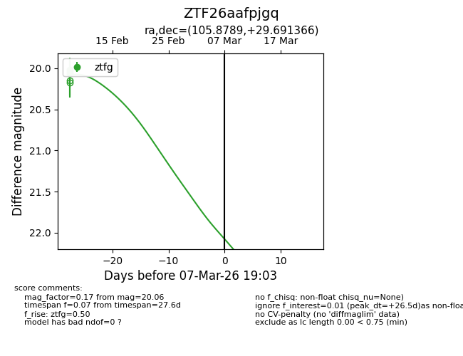
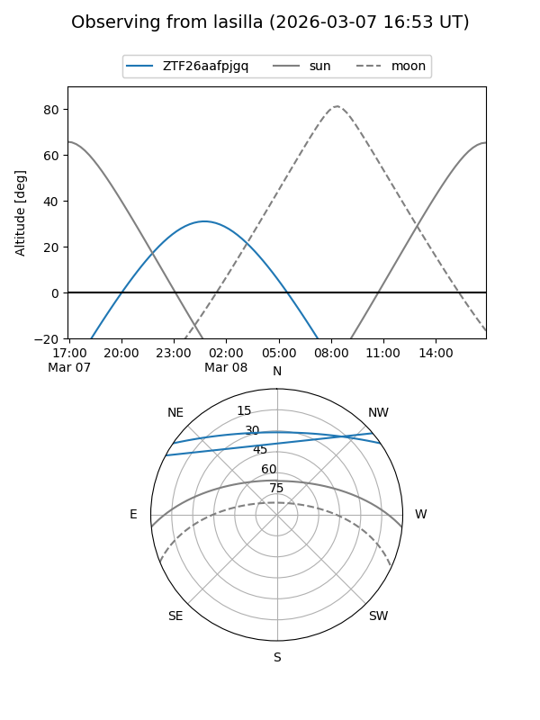
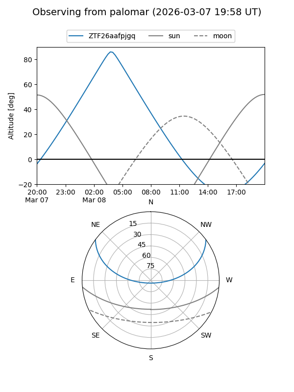
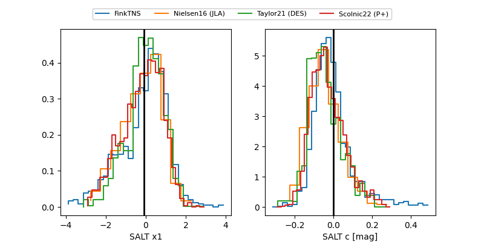

ZTF26aafpjgq
Target ZTF26aafpjgq at 2026-03-07 19:05
Aliases and brokers:
FINK: link
Lasair: link
ALeRCE: link
alt names
ZTF26aafpjgq (ztf,fink_ztf)
Coordinates:
equatorial (ra, dec) = 105.8789,+29.69137
equatorial (HMS+DMS) = 07:03:30.93,+29:41:28.92
galactic (l, b) = (187.0996,+15.46119)
Flags:
Photometry:
last ztfg=20.06
3 ztfg detections
Lightcurve

Visibility


Additional plots
